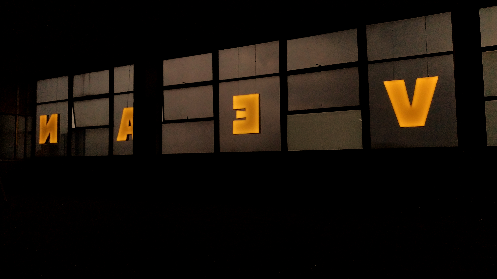
Bienvenido a mi portafolio
Explora mis proyectos fotográficos, donde la luz, el color y la emoción se encuentran para contar historias únicas.



Explora mis proyectos fotográficos, donde la luz, el color y la emoción se encuentran para contar historias únicas.

Mi nombre es Jan David Ardila, pero me conocen como David, soy productor multimedia y en mi trabajo me enfoco en dar un toque único a cada proyecto. Me gusta combinar creatividad, técnica y narrativa visual para crear experiencias que conecten con las personas. Cada pieza que realizo busca destacar por su identidad y por transmitir un mensaje auténtico que refleje la esencia de cada historia
Con un enfoque especial en la fotografía, mi mayor fortaleza y pasión. A través de la cámara busco capturar momentos con intención estética y narrativa, cuidando cada detalle de la composición y la luz. Además, me destaco en el área de la ilustración y el diseño, lo que me permite complementar mis proyectos visuales con una identidad gráfica sólida y creativa. Cuento con conocimientos en programas como Adobe Photoshop, Illustrator, Premiere Pro, Lightroom, Animate y DaVinci Resolve, herramientas que utilizo para potenciar la calidad y el estilo de cada producción
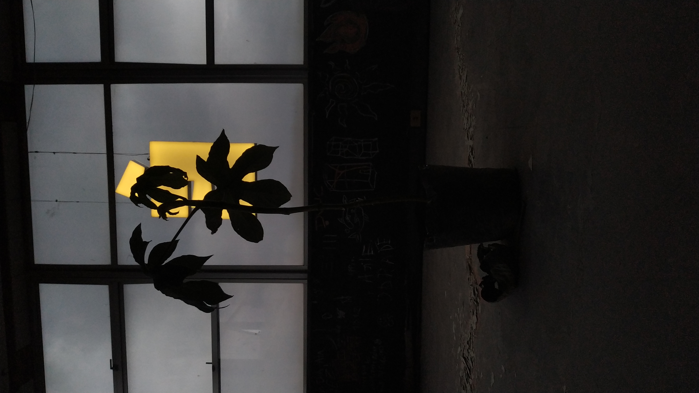
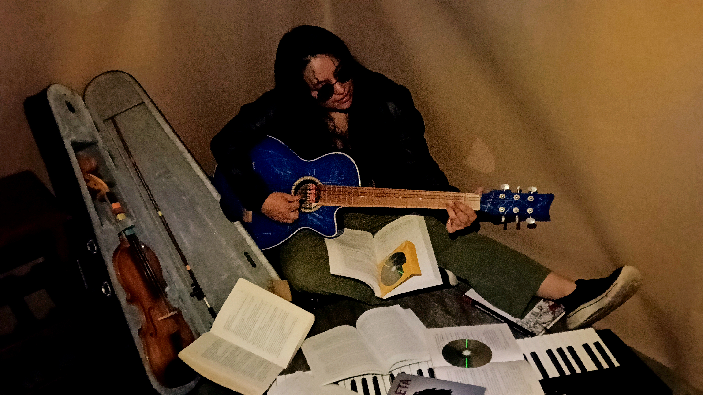
Tipo de proyecto: Fotografía
Fecha: Octubre 2024
En estas fotografías busco reflejar la belleza que puede encontrarse en medio del caos. A través de la composición y el color, quiero transmitir una sensación de calma que contraste con el desorden o la agitación del entorno.
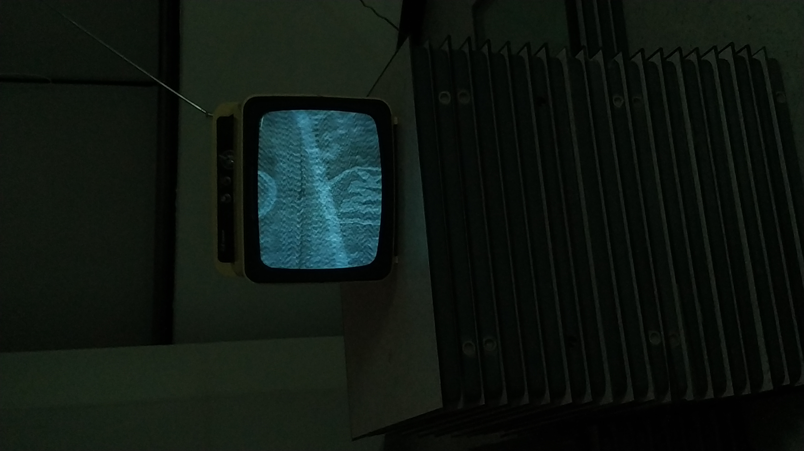
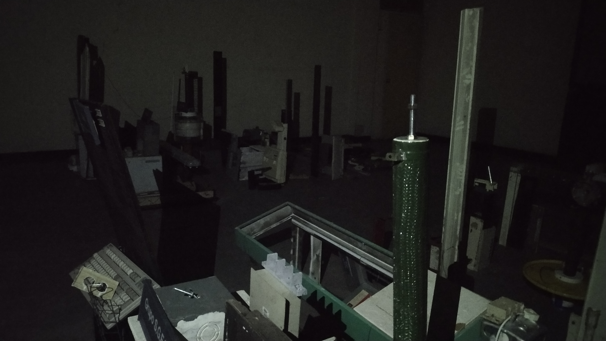
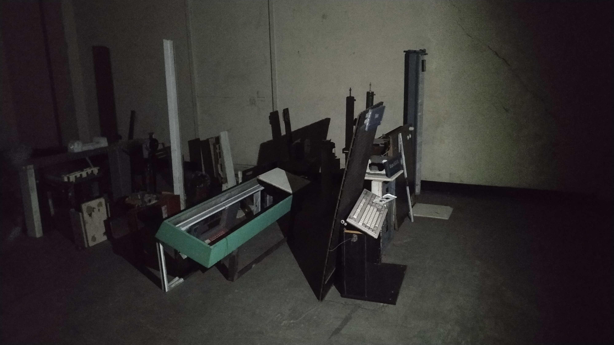
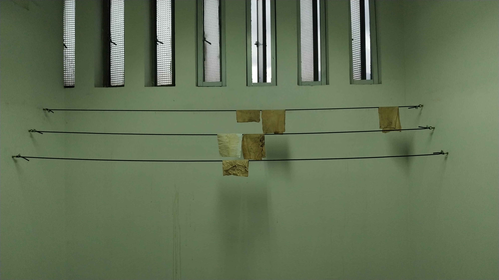
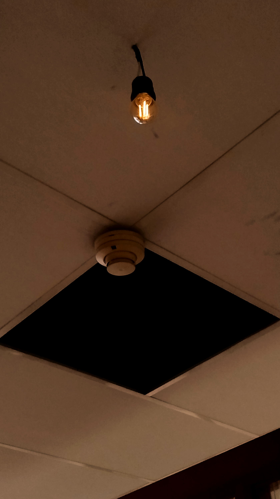
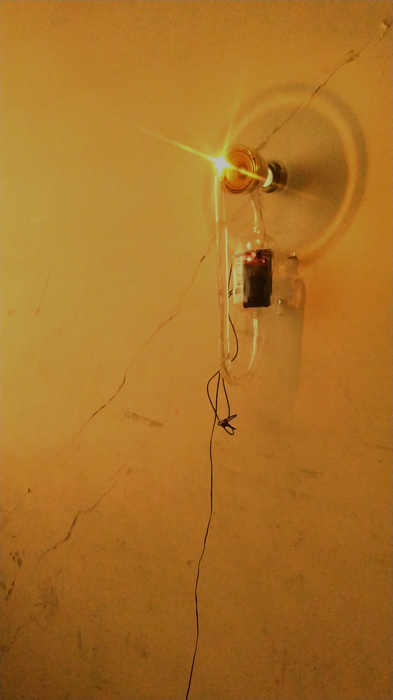
Tipo de proyecto: Fotografía
Fecha: Agosto 2025
En estas fotografías quiero mostrar a una chica que no teme expresarse, sin importar lo que muestre o lo que la rodee. Su presencia refleja libertad y confianza en sí misma.
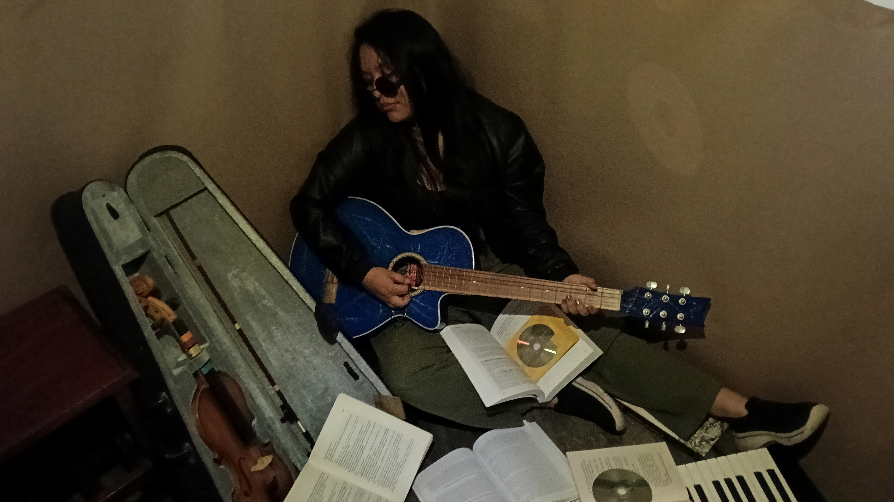
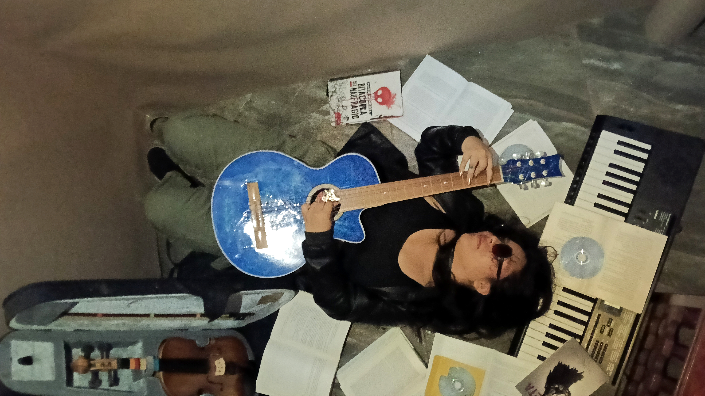
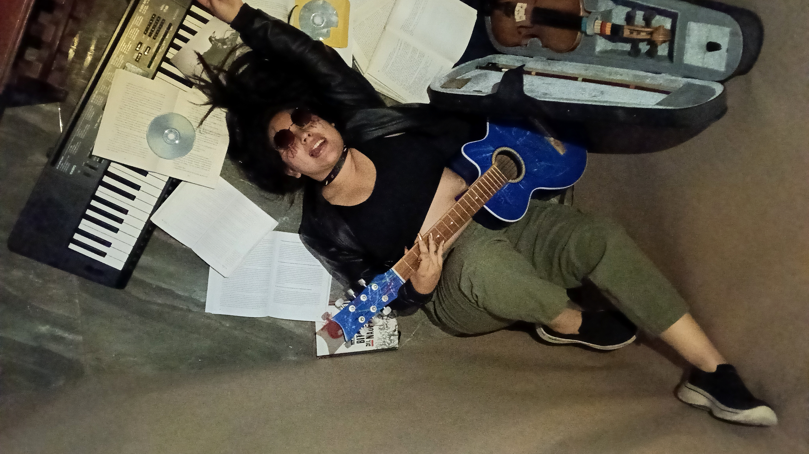
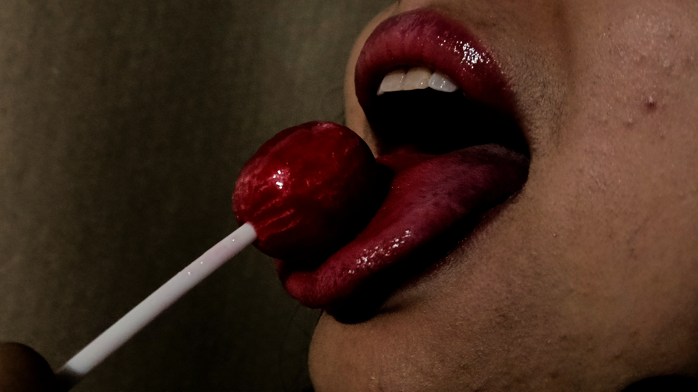
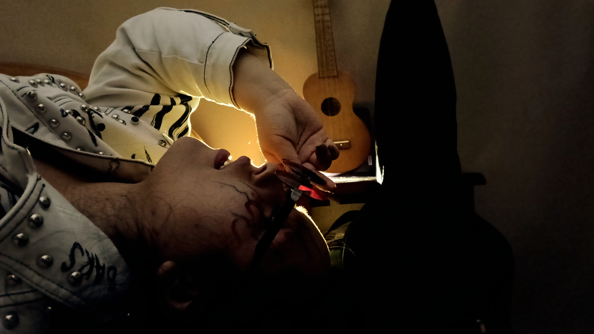